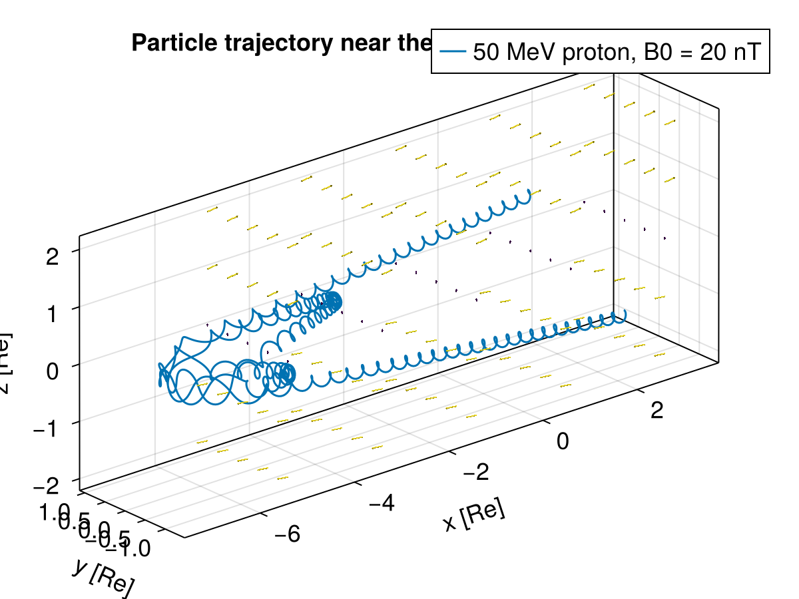

Current sheet


This example shows how to trace protons in a stationary magnetic field that corresponds to the 1D Harris current sheet defined by a reference strength and width. A Wiki reference can be found here.
using TestParticle
using TestParticle: getB_CS_harris, c, Rₑ
using OrdinaryDiffEq
using StaticArrays
using LinearAlgebra: norm
using CairoMakie
### Obtain field
# Harris current sheet parameters in SI units. Bn is the z-component.
const B₀, Bn, L = 20e-9, 2e-9, 0.4TestParticle.Rₑ
function getB(xu)
SVector{3}(getB_CS_harris(xu[1:3], B₀, L, Bn))
end
function getE(xu)
SA[0.0, 0.0, 0.0]
end
### Initialize particles
m = TestParticle.mᵢ
q = TestParticle.qᵢ
# Initial condition
stateinit = let
# initial particle energy, [eV]
Ek = 8e3
# initial velocity, [m/s]
vmag = c*√(1-1/(1+Ek*q/(m*c^2))^2)
θ = -60
ϕ = 30
v₀ = [vmag*cosd(θ), vmag*sind(θ)*sind(ϕ), vmag*sind(θ)*cosd(ϕ)]
# initial position, [m]
r₀ = [1Rₑ, 0Rₑ, 1Rₑ]
[r₀..., v₀...]
end
param = prepare(getE, getB)
tspan = (0.0, -400.0)
prob = ODEProblem(trace!, stateinit, tspan, param)
sol = solve(prob, Vern9())
### Visualization
f = Figure(fontsize=18)
ax = Axis3(f[1, 1],
title = "Particle trajectory near the Harris current sheet",
xlabel = "x [Re]",
ylabel = "y [Re]",
zlabel = "z [Re]",
aspect = :data,
)
n = 2000 # number of timepoints
ts = range(tspan..., length=n)
x = sol(ts, idxs=1)./Rₑ |> Vector
y = sol(ts, idxs=2)./Rₑ |> Vector
z = sol(ts, idxs=3)./Rₑ |> Vector
l = lines!(ax, x, y, z, label="50 MeV proton, B0 = 20 nT")
axislegend()
function plot_B!(ax)
xrange = range(-5, 3, length=5)
yrange = range(-1, 1, length=5)
zrange = range(-2, 2, length=5)
ps = [Point3f(x, y, z) for x in xrange for y in yrange for z in zrange]
B = map(p -> Vec3f(getB(p.*Rₑ)./B₀), ps)
Bmag = norm.(B)
arrows!(ax, ps, B, fxaa=true, color=Bmag, lengthscale = 0.2, arrowsize = 0.02)
end
plot_B!(ax)

This page was generated using DemoCards.jl and Literate.jl.